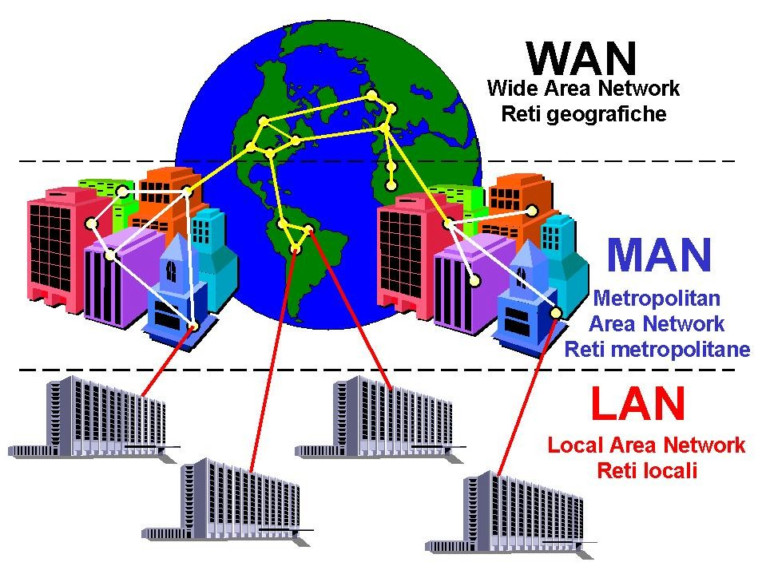

menu
red de computacion
que es la red de computacion?
Una red de computadoras es un conjunto de equipos (como computadoras, teléfonos, impresoras, servidores, etc.) que están conectados entre sí para compartir información y recursos. En otras palabras, es un sistema que permite que varios dispositivos se comuniquen.
Caracteristicas principales
Conexión: Los dispositivos están unidos por cables o de forma inalámbrica (WiFi). Comunicación: Pueden enviar y recibir datos (archivos, mensajes, videos, etc.). Compartición: Permiten compartir recursos como internet, impresoras o archivos.
ejemplos
Conexión: Los dispositivos están unidos por cables o de forma inalámbrica (WiFi). Comunicación: Pueden enviar y recibir datos (archivos, mensajes, videos, etc.). Compartición: Permiten compartir recursos como internet, impresoras o archivos.
